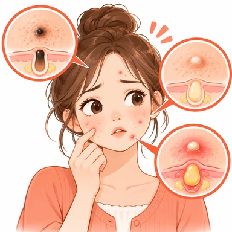
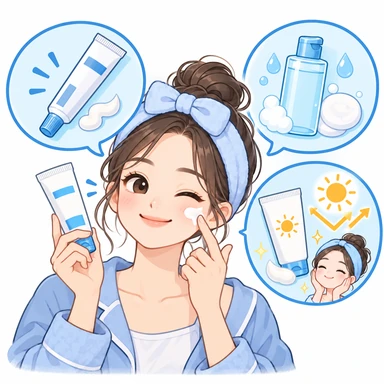
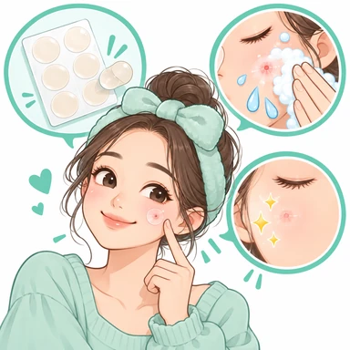

青春痘完整主題
點擊下方系列直接看圖卡

認識青春痘與正確洗臉
分辨粉刺與發炎程度，從溫和清潔開始
常見問題
青春痘有哪些外觀與嚴重程度？
依外觀可分四種：輕度粉刺型（黑頭、白頭粉刺為主，幾乎不紅腫）、輕度發炎型（開始出現紅色丘疹）、中度發炎型（紅腫丘疹與膿皰明顯增加，容易留下色素沉澱）、重度囊腫型（大型結節或囊腫、疼痛明顯，容易形成永久痘疤，建議儘早由皮膚科醫師評估）。 看圖卡 ›
黑頭、白頭或閉鎖性粉刺很多，怎麼照顧？
粉刺是毛孔內角質與皮脂堆積，不是洗不乾淨，反覆刷洗、磨砂反而更刺激。早晚溫和清潔，搭配不易致粉刺的保濕和防曬；不要自行擠壓、挖除，需要清除時由皮膚科醫師評估。疼痛、發炎或開始留疤，應就醫。 看圖卡 ›
輕度發炎型青春痘，日常怎麼照護？
重點是減少刺激、不要擠、保濕與防曬：一天溫和清潔 2 次，不磨砂、不用酒精反覆擦；選清爽、不易致痘的保濕產品，白天用 SPF 30 以上防曬。痘痘增加、出現硬塊或囊腫、開始留疤，或 2～3 個月仍無改善，建議就醫。 看圖卡 ›
青春痘洗臉水溫怎麼選？溫水會打開毛孔嗎？
不會。毛孔不會因熱水打開、冷水關閉，不必交替冷熱水。用舒適的溫水輕輕打濕全臉即可，避免過熱造成乾燥與刺激，也不需要特別用冰水。 看圖卡 ›
洗臉後緊繃、刺痛正常嗎？青春痘肌怎麼保濕？
洗後應該清爽舒適，不應明顯刺痛或緊繃；乾燥、脫皮、泛紅或刺痛，可能代表清潔方式或產品不適合。油性肌或青春痘肌也可能需要保濕，選清爽、不易致粉刺的產品；保濕有助維持皮膚屏障，但不能取代治療。 看圖卡 ›

痘痘藥與使用方式
常見成分怎麼擦、兩種藥怎麼搭
依成分快速點選（8 項成分直達）
常見問題
拿到痘痘藥後，怎麼開始擦？
洗臉後輕拍乾，再依指示薄擦指定治療區，不厚敷；A 酸類通常不只點在單顆痘痘上，範圍依醫囑。A 酸、BPO 初期可依醫療人員指示降低頻率、逐步適應。避開眼周、唇部及破皮處，並搭配不易致粉刺的保濕與 SPF 30 以上防曬。 看圖卡 ›
手上有兩種痘痘藥，能一起用嗎？
是否需要兩種藥、使用範圍與時段，先依處方確認，不要自行混合。外用抗生素常搭配 BPO，可降低抗藥性風險；Adapalene 與 BPO 可以搭配；Tretinoin 與 BPO 要看製劑，傳統製劑常分時使用。另外加杜鵑花酸、水楊酸等酸類，要注意刺激累加。 看圖卡 ›
痘痘藥、保濕與防曬，順序怎麼排？
藥品種類與頻率先依處方。早上可依指示安排清潔、擦藥、保濕、防曬；晚上清潔後，依產品要求讓皮膚乾燥再擦藥。容易乾燥可詢問能否先保濕再擦藥，但不要把藥自行混進乳液；也不是每一層都要等 20～30 分鐘。 看圖卡 ›
一條複方藥已有哪些成分，會重複用藥嗎？
一條複方可能已含兩種以上有效成分，要看藥袋上的成分，不只記商品名稱。已含 A 酸、BPO 或抗生素時，不要再自行加擦相同成分；依整個產品的用法使用，不自行加倍。 看圖卡 ›
擦藥後紅、乾、刺，何時該停用或就醫？
輕微乾燥、少量脫屑：加強溫和保濕、停止額外去角質，並詢問是否調整擦藥頻率。持續灼熱、紅痛、裂開或滲液：暫停可疑產品並聯絡醫療人員。臉唇腫脹、蕁麻疹要立即停用並就醫；合併喉嚨緊、呼吸困難或暈厥，立即撥打 119。 看圖卡 ›

痘痘貼與破皮照護
哪種痘痘適合貼、怎麼貼、破了怎麼辦
常見問題
這顆痘痘適合貼痘痘貼嗎？
一般水膠體痘痘貼對已冒白頭、或自然破掉有少量滲液的痘痘最有用，能吸收滲液、隔開手指不去摳。只有紅腫沒白頭、又硬又痛的深層痘、囊腫或粉刺，貼了效果有限；反覆發作或容易留疤，建議就醫。 看圖卡 ›
痘痘貼怎麼用、何時換？
洗淨並完全擦乾後，選比痘痘稍大的尺寸蓋住正中央、輕壓邊緣，底下不要塗保養品或藥膏。多數產品建議貼數小時到一個晚上，實際依產品說明；變白、鼓起、邊緣翹起或弄髒就換新的。撕的時候順著皮膚表面慢慢撕開。 看圖卡 ›
痘痘破了，還能擦藥或貼嗎？
先清潔並輕壓止血，不要再擠。A 酸、BPO、水楊酸先不要擦在破口，癒合、無滲液後再恢復。小範圍、淺表、少量滲液時，可貼單純水膠體痘痘貼，不選含酸類或茶樹精油的款式。紅腫擴大、越來越熱痛、膿液增加、發燒或出血壓不住，請就醫。 看圖卡 ›
酒糟、痘印與疤痕
分辨酒糟，處理痘痘留下的印子
常見問題
青春痘還是酒糟？
青春痘常見黑頭、白頭粉刺，也可能長到胸、背；酒糟通常沒有粉刺，鼻子、雙頰等臉部中央反覆泛紅，合併紅色小疹或膿皰。兩者也可能同時存在，應由皮膚科確認。眼痛、明顯畏光或視力模糊，請當天就醫。 看圖卡 ›
酒糟肌如何清潔、保濕、防曬？
早晚用溫和潔面產品、微溫水輕洗，避免熱水、洗臉刷與磨砂；洗後用無香精、不刺激的乳霜保濕；每天用廣效 SPF 30 以上防曬，搭配帽子或陽傘。新品一次只加一種，並記錄日曬、悶熱、熱飲、辛辣、酒精等是否讓臉更紅。 看圖卡 ›
留下的是紅黑印、凸疤還是凹疤？
平坦紅印或黑印主要是顏色改變，注意防曬與減少刺激；肥厚性疤痕凸起較硬、仍在原傷口範圍內；蟹足腫會長出原傷口邊界，需要醫師評估；凹疤表面凹陷、常見於痘痘後，保養品難以填平，可諮詢皮膚科。 看圖卡 ›
不同疤痕產品的用途有什麼差別？
傷口癒合、沒有滲液後才開始用。矽膠凝膠適合不易貼片的位置，依說明薄擦待乾；矽膠貼片依說明貼附、清洗並逐步適應。保濕品可減少乾燥不適，但淡斑、保濕與改善凸疤是不同的事；凹疤、蟹足腫或持續增厚的疤痕，請就醫評估。 看圖卡 ›